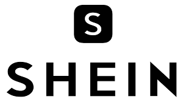
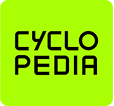
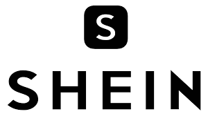
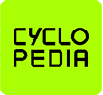

Media
E-commerce
SaaS Startups
E-learning
Creator economy
Sports & Fitness
Media
E-commerce
SaaS Startups
E-learning
Creator economy
Sports & Fitness
Berpengalaman 6 tahun bangun solusi
lintas industri
Kami telah menangani 400+ proyek lintas industri, dari perbankan hingga platform LIVE interaktif.
Most websites convert poorly
(bad UI, UX & SEO practices, missed product potential)
Squareblack designs for conversion
(heuristic analysis based + regular optimization)
Fokus pada konversi — ubah trafik jadi penjualan nyata.
Tingkatkan penjualan dan jangkau lebih banyak klien lewat desain yang optimal dan terarah.

Strategi jangka panjang untuk hasil yang berkelanjutan
Kami merancang sekaligus mengoptimasi produk untuk terus
berkembang.


 konversi
konversi
 Book a call with Ariq →
Book a call with Ariq →

 


